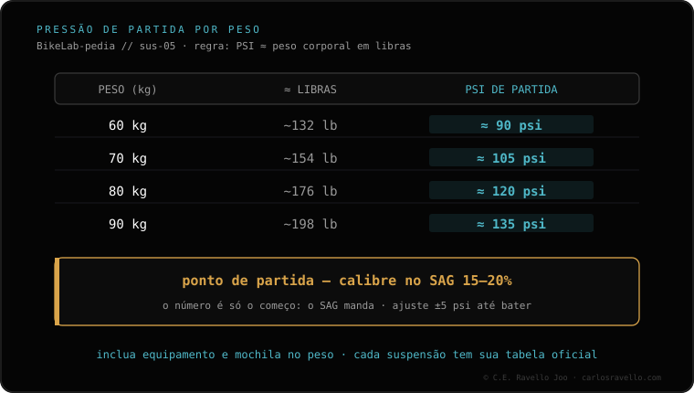

Ponto de partida prático: os PSI do garfo ≈ o seu peso corporal em libras (com equipamento). Mas é só o início: sempre calibre depois pelo SAG (15-20% no garfo), que é o dado que realmente manda. A tabela por peso é orientativa (60 kg≈90 psi, 70≈105, 80≈120, 90≈135) e varia por modelo e ano. Depois de fixar a pressão, ajuste o retorno. Se mesmo com o peso correto ele estiver muito duro, reduza a pressão e meça o SAG de novo; se quiser mais progressividade sem mexer no início do curso, veja os tokens.
A tabela te coloca em movimento; o SAG te afina. Use uma para começar e o outro para terminar.
Como referência rápida para inflar o garfo, coloque tantos PSI quanto você pesa em libras com o seu equipamento de pedal. É uma aproximação que coloca a pressão na faixa certa para depois afinar. Não é um valor final: a pressão exata muda por modelo de garfo e ano.
Esses valores são aproximados e servem só para começar; ajuste-os sempre pelo SAG.

Primeiro infle na pressão de partida (pela tabela ou pela regra do peso). Depois confira o SAG: se estiver fora dos 15-20%, suba ou baixe a pressão até entrar na faixa. Uma vez fixada a pressão pelo SAG, ajuste o retorno. A pressão e o SAG vêm primeiro; o retorno e o resto são calibrados pelo ciclista conforme o gosto e o terreno.
Mande o modelo do seu garfo e o seu peso com equipamento e damos um ponto de partida para depois afinar pelo SAG. Fale com a gente no WhatsApp
Como partida, PSI ≈ o seu peso em libras (com equipamento). Sempre calibre depois pelo SAG (15-20%). Varia por modelo e ano.
Não, é orientativa: 60≈90, 70≈105, 80≈120, 90≈135 psi. Serve para começar; quem manda é o SAG.
Depois da pressão e do SAG, o retorno. O ciclista calibra o resto.
© 2026 BikeLab Studio. Conteúdo sob CC BY 4.0: você pode copiar, traduzir e publicar, inclusive com fins comerciais. A citação é obrigatória. Sem atribuição, a licença é revogada automaticamente (CC BY 4.0, §6.a) e o uso passa a ser violação de direitos autorais: solicitamos a retirada do conteúdo e sua desindexação. · Design e propriedade: Carlos Ravello Joo